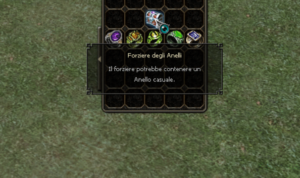
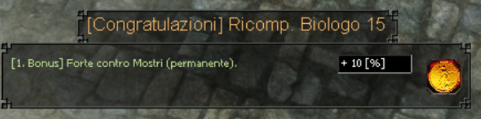
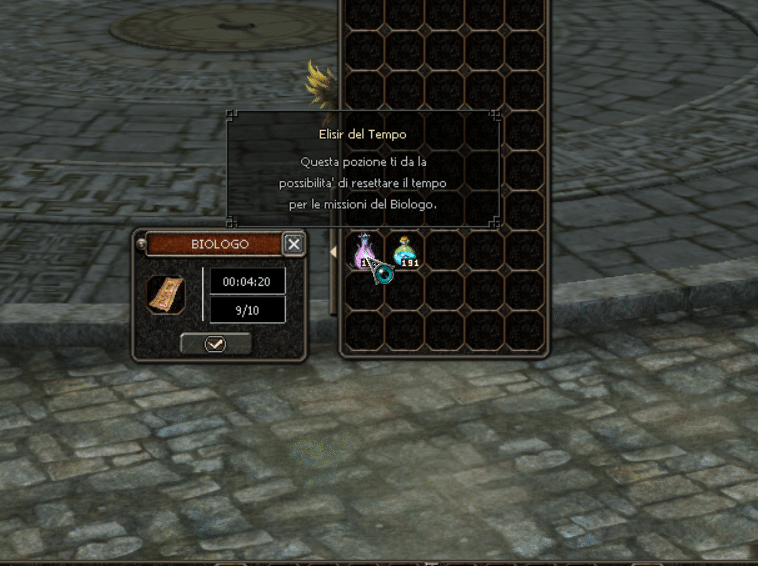
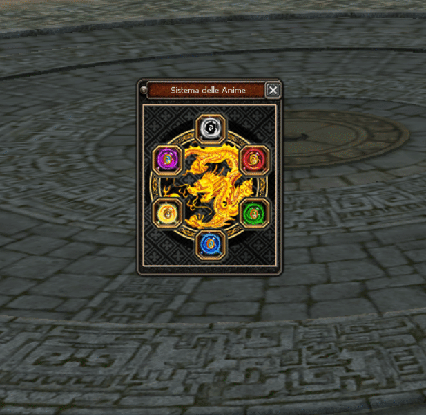

Potenziamenti
Intro
Quì troverete tutte le informazioni reltive al potenziamento del vostro personaggioAnelli del Potere
Gli anelli del potere è un system che vi permetterà, già dal livello 95 uccidendo il boss Drago Glaciale, di ottere gli anelli del potere tramite il forziere degli anelli.Ogni anello avrà una propria speculiarità, infatti c'è l'anello forte vs mostri, oppure l'anello con forza e resistenza all'avvelenamento, e cosi via. Ogni anello durerà 1 giorno, dal momento in cui lo indosserete. 
×

Biologo
Su Shyra abbiamo introdotto un system molto piu' comodo rispetto al classico, dove bisognava andare dall'NPC. Infatti cliccando la terza icona sulla sinistra dell'inventario all'altezza della spada, potrete trovare un'icona che in maniera semplice e veloce, vi permetterà di consegnare 1 item.Dovrai però attendere un paio di minuti prima di poter riconsegnare gli item interesati. Ovviamente il tempo varierà in base all'item consegnato.
Inoltre in gioco sono stati inseriti degli elisir (Elisir del Successo e Elisir del Tempo).
- Elisir del successo: vi permetterà di aumentare la percentuale di successo per la consegna di un item
- Elisir del tempo: vi permetterà di resettare il tempo d'attesa, cosi da poterne consegnare subito un altro.
×

Inoltre i bonus ottenibili dal biologo variano in base all'item consegnato:

×

- Respiro del Dio Drago: 8% forte vs mostri
- Amuleto dell'Orco: +80% difesa
- Pergamena Esoterica: +60% valore d'attacco
- Goccia Magica: +10% Velocità di movimento, +15% resistenza ai mostri.
- Artiglio Glaciale: +5% velocità d'attaco, +10% resistenza danni abilità
- Reliquia dell'Astio: +10% difesa contro razze
- Reliquia della Crudeltà: +10% Attacco contro razze

×

Anime del Potere
Questo System è particolare. Infatti potrete migliorare ancora di piu' il vostro personaggio!Le anime saranno craftabili attraverso degli item appositi e questi item sono:
- Pozione Eterna
- Pozione Infernale
- Pozione dell'Inganno
- Pozione Corrotta
- Pozione del Tormento
- Pozione Selvaggia
- Nuclei
Le Anime durano un totale di 7g dal momento del craft. 
×

Stole
Per ottenere le stole, dovrete ottenere le stoffe sottili, che saranno droppabili da tutti boss del gioco. Per craftare una stola dovrete andare dall'NPC Theowahdan e consegnargli 10 stoffe sottili.Da li avrete una vastissima scelta per la personalizzazione delle vostre stole!

×

Cinture
Questo System sarà ottenibile nelle fasi finali di gioco. Nel server sono presenti due tipi di cinture, una dove sarà dedicata al PVM e quattro cinture dedicate al PVP con resistenza razza!Le cinture saranno droppabili dal livello 115.
La cintura PVM sara droppabile nella mappa Tempio Hwang tramite il boss Tiranno del Tempio, nella mappa stessa dropperete anche gli item up, per migliorarla.
Le cinture PVP saranno droppabili nella mappa Sabbie della Sofferenza tramite il forziere delle Cinture, droppabili dai boss Creatura del Deserto, Ombra di Anubi e Il Brutale Antico Naga.

×

Skill
Su Shyra, oltre ai classico miglioramento delle skill al grado perfetto, è stato aggiunto un altro e potrete migliorarlo fino al grado Leggendario.Per migliorare le skill dovrete andare dall'NPC "Maestro delle Abilità" che lo troverete alla Capitale di Shyra.
Per ogni step di livello skill avrete bisogno di alcuni item in particolare:
- Per migliorare le skill dal grado 1 al grado Gran Maestro avrete bisogno 10 "Libri Abilità" che pertandoli dall'NPC otterete il "Libro Spirituale". Questi item saranno droppabili dalla Metin della valle degli orchi.
- Per migliorare le skill dal grado Gran Maestro al grado Maestro Perfetto, avrete bisogno 20 Pergamene delle Anime che portandoli dall'NPC otterete la Pietra delle Anime. Quetsi item saranno droppabili dalle Metin della Piana Esoterica.
- Per migliorare le skill dal Grado Maestro Perfetto fino al Grado Leggendario, avrete bisogno di 8 manuali della conoscenza che portandoli dall'NPC otterete la PDA Leggendaria. Questi item saranno droppabili da tutte le Metin dalla mappa Sentiero Magico fino alla mappa Sabbie della Sofferenza.

×

Rune antiche
Il system delle rune antiche vi permetterà di droppare nel dungeon "Piramide antica" degli item utili per il vostro personaggio.Recandovi all'ingresso del dungeon (che si troverà nella mappa Sabbie della sofferenza) troverete un NPC che tramite l'apposita gui vi darà accesso al crafting ed al potenziamento delle rune.

×

Pozioni Miglioramento
Queste pozioni hanno un utilità particolare, infatti vi permetteranno di aumentare la percentuale di successo di qualsiasi oggetto!Esse saranno reperibili dal boss Sfinge Antica, dal dungeon Piramide Antica.
Ci sono 3 tipi di pozioni e sono:
- Pozione Incantata (P) con una percentuale del 5%
- Pozione Incantata (M) con una percentuale del 10%
- Pozione Incantata (G) con una percentuale del 15%

×